The Sovereign Cocoon
Act 1: Thesis + Product · 73 illustrations
### Act 1: What Is This? (Thesis + Product)
### Act 2: How Does It Work? (Architecture + Infrastructure)
### Act 3: How Big Is It? (Market + Economics)
### Act 4: How Do We Execute? (Plan + Team)
### Act 5: What Are the Terms? (Legal + Governance + IP)
### Act 5b: How Is the Vault Built? (Security Architecture)
§ Document IndexThis company can be launched for $25,000.
The codebase is built. The inference engine runs on an RTX 3080 Ti. The certification service costs $2,150/month to operate. QR stickers cost $0.05–$0.15 each (Doc 29 §4). Founding dinners seat 12 people in an apartment. Every computationally expensive operation — LLM inference, model training, .kasset minting, cryptographic signing — runs on the user's own hardware. SSK's only per-trade cost is certification service compute: ~$0.001. Gross margin per trade: >99%. At that burn rate — $2,400/month — the progressive certification fee breaks even at 325–488 users, not 14,000. Those users are concentrated in Manhattan (27,000 people/km²) — dense enough for peer-to-peer discovery. The Echo mechanism (24-hour store-and-forward .kasset catalogs) fills gaps so the network feels populated before it actually is (Doc 07 §Mesh Density). Even at near-zero virality (k=0.05), personal network introductions produce 488 users by M8. Total out-of-pocket to breakeven: less than a used car.
The $3M seed does not buy survival. It buys speed. A 3-person founding team instead of one. Physical Vaults in Brooklyn and Tokyo instead of digital-only. 10 defensive patent filings instead of zero. Six regulatory opinions instead of operating on analysis alone. $398K across six marketing channels instead of $250/month in stickers. 59,000 users at M12 instead of 488. The architecture is the same either way. The equation is the same either way.
You are not funding a company that might work. You are accelerating a company that already does. You are not betting on a founder. You are betting on an equation:
N(t+1) = (1+k) × N(t) + C(t)
Where N(t) is cumulative users, k is the viral coefficient (new users per existing user per month), and C(t) is organized acquisition. At any k > 0 — any viral coefficient at all — the zero-cloud cost structure guarantees cash-flow positive operation. The company survives at k=0.05. It thrives at k=0.3. The $3M determines how fast. The equation determines whether. The rest of this document explains why.
§ The PremiseIs the cat in the box?
A unit of value does not exist until it is evaluated by one perceiving agent. The cost of that evaluation, captured as a fixed unit of consumed energy, is the fundamental metric for economic science.
Awareness of the configuration of dynamic relationships in the present moment is the only asset for sale in economic markets. In 2026, we are paying an increasing "Verification Tax" on achieving an accurate awareness in a polluted information environment.
AI capex ($400+B) spent on cloud AI infrastructure is building a noise generator where synthetic information is mutated from underlying synthetic information. The snake is eating its tail while humanity already possesses in its hands over four trillion USD in edge compute capability. The cloud can't and will never be able to compete with decentralized markets.
Cloud AI businesses rent your awareness back to you at a markup. You are their product, and they offer only a small slice of what they know about you, and they have the nerve to charge you for your own data exhaust on a monthly basis. In reality, these providers are dependent on dark patterns to lock you in to ignoring the value you create for them on an instantaneous basis, and they are actively excluding you from economically benefiting from your own data.
Meanwhile, in the last 12 months: unvetted DOGE personnel accessed every federal employee's Social Security number (EPIC v. OPM, Feb 2025). The National Security Advisor added a journalist to a classified military planning chat on Signal (March 2025). The FTC confirmed data brokers sell US military movement patterns for $0.12/device/month.
§ The Problem SpaceWhat if you were the only person who owned your own awareness?
The Sovereign Survival Kit is a reference design for an intelligent twin that puts the data in your own hands, the model in a locked box, and the market under your direct control. The twin runs locally, answers only to you, and is architecturally incapable of serving any other interest — there is no server to phone home to. It actively seeks out other twins, finds a mutually acceptable exchange, and facilitates the transfer of awareness. The twin can trade your knowledge, your possessions, or your time according to your current levels of desire. The trade is denominated in physics, not fiat. The twin pays a progressive certification fee for the notary certification that certifies trade provenance (Doc 02, Doc 03).
§ The Red PillYour data — everything that's been measured about you, in an encrypted, airgapped, bio-secured black box.
Your twin — your supervised learning system, perfected to perform decision making with your consent and your idiolect.
Your market — the other twins, making trades for you while you focus on life happening in the immediate moment.
Every trade is denominated in σ (sigma), a physics-denominated reference number: 1 σ = 1 kWh = 3.6 MJ, converted to local fiat via a published deterministic formula using public energy cost data (default: EIA/METI). σ is not a currency or stored-value instrument (Doc 05, Doc 22).
§ How It Works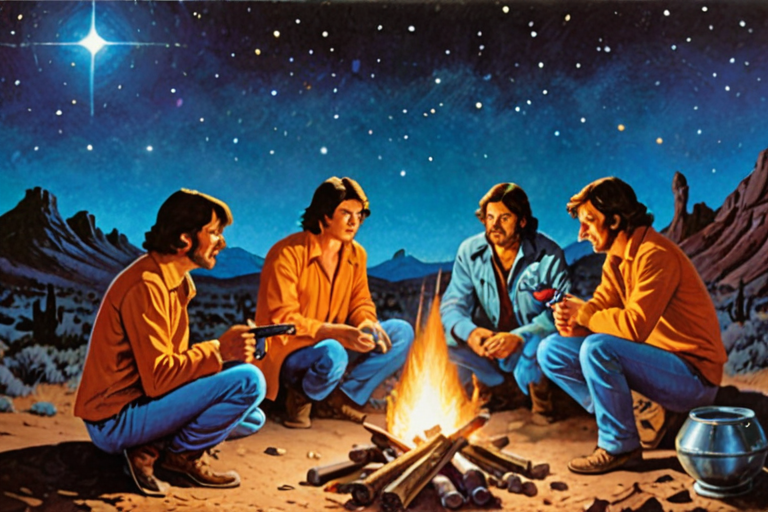
A progressive certification fee on every .kasset trade. Range: ~0.5–6%. Weighted average: 2.38% at M12, rising to 3.25% at M36. Gross margin per trade: >99% — the user's hardware runs all compute; SSK's only per-trade cost is certification service compute (~$0.001). Additional streams: Vault subscription ($60/yr–$80/mo), Vault Freeze ($5/mo), Courier fees (15% commission), Verification/Coordination fees, and hardware margins (~55–75%) on lifestyle sensor products at M15+ (Doc 08, Doc 11, Doc 06).
§ RevenueThe operating plan commits to Goldilocks. The financial model shows what happens if the product works as designed. The company is cash-flow positive in both scenarios — and in the three others (Doc 09, Cheat Sheet).
§ MarketFacebook expanded campus by campus. We bridge students to each other. AOL mailed a billion CDs. We burn .kassets onto $0.05 QR stickers. Airbnb proved hospitality works by sleeping on air mattresses. We prove the economy works by sharing a meal while trading the local art.
Five beachhead communities: MSM community (privacy from Grindr surveillance), Brooklyn creatives (provenance for physical art), JWS @ Wharton (founder's alumni network), ITP @ NYU (founder's graduate program), Ivy League cluster expansion. Blended CAC: $47 (Doc 07).
§ Go to MarketThe traction is the theory itself. 30 years of research across 18 professional roles converged into a single mathematical framework where every variable is sourced, every scenario is modeled, and the survival proof holds at any positive viral coefficient. The data room is 36 documents, each internally consistent, each cross-referenced. The equation was not reverse-engineered from a desired outcome — it was derived from the architecture, and the architecture was derived from the physics. End-to-end MVP running on an RTX 3080 Ti: complete ingestion → airgap → mint → ML-DSA-65 signing pipeline.
§ TractionNo cloud dependencies, ever, baked into the architecture. No privacy product has a commerce layer. No commerce product has privacy built in. The twin has both. Our foundation model trains on verified human expertise.
§ Competitive AdvantageOne (1) systems architect known for: achieving Eagle Scout; exploring VR at a national lab in high school; attending the Wharton School as a Joseph Wharton Scholar; mastering UXD as a Mac Genius at the Apple Store; learning cooperative collaboration at NYU's ITP; prototyping Ask Maps for Google Maps resulting in a US patent; re-engineering Snapchat's recipients' page for a 40% reduction in p90 page load latency; building physical spaces and objects for homeowners and art collectives. The founder's SSK twin plays the role of a backup founder and integrity check on the system itself. Agent swarms perform knowledge work at enterprise scale directed by a crew of specialist hires in operations, research, and engineering (Doc 14).
§ The Team$3,000,000 Seed via YC Standard Post-Money SAFE at $42.86M post-money valuation cap. 7.0% to investors. Founder retains 93.0%. No option pool — employee compensation is cash + spark grants (Doc 15, Doc 16).
~18 months of planned-spend runway. 37 months at survival burn. Opens Brooklyn and Tokyo storefronts, files 10 defensive patent claims, secures regulatory opinions, deploys certification infrastructure, activates marketing (Doc 11, Doc 21, Doc 24).
§ The AskCore infrastructure: $7,150/month. Marginal compute cost per user: $0. Cash-flow positive in all five modeled growth scenarios. The worst case (k=0.05) produces 18,382 users and $215,600 MRR by M12 — above the $167K monthly burn. Death requires three simultaneous failures: (1) < 19,000 users in 37 months, (2) zero organic growth, and (3) organized acquisition below 500/month. Any one false = company survives (Cheat Sheet).
Self-funded, breakeven requires 325–488 users and $25K. Funded, the same architecture scales to 59,000 users and $691K MRR by M12. The raise changes the timeline. It does not change the outcome.
§ Why This Company Cannot Die99.6% founder voting control via dual-class stock (20x Class B). 10M shares — irrevocable cap. No new shares at any future round. No investor voting board seat at any stage. Twin serves as charter-level architectural veto oracle (not a board seat — DGCL §141(b)). The airgap IS the product (Doc 16, Doc 17).
§ GovernanceA .kasset is a piece of human awareness — encrypted, signed, and tradeable — that exists in one of three forms: expertise, possessions, and time.
### Your Expertise, Formalized
A plumber spends twenty minutes explaining to a colleague how to diagnose a failing boiler. That conversation happens on a sovereign messaging channel, captured locally on the plumber's own device. The plumber's twin — a personal AI running entirely on that device — extracts the underlying diagnostic methodology, strips the names and addresses, projects the reasoning into an Edgcumbe sequence — a standardized, lossy format that carries the methodology without the plumber's cognitive fingerprint — encrypts it, and signs it with a post-quantum cryptographic signature. The result is a .kasset: a tradeable unit of the plumber's expertise that can be sold to anyone on the network, indefinitely, without the plumber lifting a finger again.
A jazz pianist records a forty-minute improvisation in her living room. Her twin doesn't capture the performance — it captures the decisions: why she resolved that harmonic tension the way she did, the modal vocabulary she gravitates toward, the rhythmic signatures that define her voice. The creative reasoning behind the music is formalized and signed. The .kasset is not the recording. It's the methodology that produced it — and anyone who buys it gains access to how she thinks, not just what she played.
The first is formalized process. The second is creative intuition. Both are human awareness. If a human thought it, said it, made it, or played it, and it has value to someone else, it can be minted.
### Your Work, Attached to the Object
§ 1. What Is a Kasset?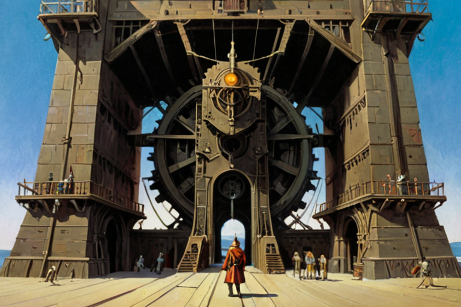
The three forms above are active — a person decides to mint them. A person also generates passive events:
### The Data You Already Generate
Your wearable records your heart rate every second. Your phone tracks your location. Your messages contain your thinking in real time. Your calendar reveals how you allocate attention. Your environment — air quality, light, temperature — is measurable by sensors that cost a few dollars each.
Right now, this data exhaust flows to platform vendors for free. They use it to train models and target ads. You get nothing.
In the Sovereign Survival Kit, this data never leaves your device without your consent. It accumulates in your vault — encrypted, local, yours. Your twin — which activates after identity verification (see Section 8) — watches it continuously and, when meaningful patterns emerge, mints .kassets from it ambiently. No action required from you.
What makes this monetizable is not the data itself — it's the dynamics. The twin measures τ across every domain: cardiac rhythm, gestural patterns, conversational topic shifts, idiolect drift, voice prosody, environmental exposure, movement through space. When multiple domains converge toward closure simultaneously — all gaps resolving at once — that co-occurrence is rare. Rare events are valuable. The cross-domain convergence pattern is what gets minted, not the individual readings. Section 3 explains the mechanics.
§ 2. Where Do Kassets Come From?Eighty-six thousand heart rate readings per day are not eighty-six thousand kassets. Most of them are noise — your heart beating at 72 bpm for the fifty-thousandth consecutive second is not knowledge. The twin's job is to detect what IS knowledge.
### Frames, Not Clocks
The sensor array produces a continuous stream of readings at different rates — the accelerometer at 100 Hz, heart rate at 1 Hz, GPS every few seconds, CO₂ every 30 seconds, messages sporadically. The system does not force these into a fixed clock. Instead, it assembles reference frames — synchronized snapshots coalesced from whatever sensors have contributed since the last frame.
The frame period is not a constant. It is a dynamic variable determined by the actual sensor hardware present. Adding a sensor to the array changes the frame rate. Walking onto the Sovereign Campus, where environmental sensors join your personal array, changes it again. The frame rate of your captured reality is a property of your physical context, not a setting.
The probability distribution of frame intervals is learned from your actual sensor history. The system uses this distribution to detect when something has gone wrong: if no frame arrives beyond the expected tail of the distribution, the deadman's switch triggers.
### Tau, Tau-Dot, and Harmonic Convergence
§ 3. How Does the System Know What Matters?### The Merkle Epoch
Individual sensor readings are not signed individually — that would drain the battery and bloat storage. The Merkle tree's branch structure mirrors the reference frame hierarchy defined in Section 3 — cardiac readings branch from the cardiac sensor group, which branches from the wearable device frame. This matters for trade: when a buyer rents a branch (Section 4.2), they are renting a reference frame's output. Instead:
Every reading is hashed as a leaf in a local Merkle tree. Hashing is computationally trivial.
The Merkle tree grows continuously — every reading is live to the twin the instant it is hashed. The twin seals the tree by executing a post-quantum signature (ML-DSA-65) on the Merkle root at an interval determined by the reference frame period — not a fixed 24-hour clock. The reference frame (Section 3) is itself a dynamic variable determined by the participating sensor array; the seal cadence inherits this dynamism. Dense sensor contexts (campus, active exercise) produce more frequent seals. Sparse contexts (sleep, idle) produce fewer. The seal is a cryptographic integrity checkpoint, not a gate on availability.
Significant events detected during the day are tagged within the tree. These are the ambient .kassets — ready for trade if the user chooses to expose them.
Because this happens entirely on your own hardware, minting is free. You pay only the electricity to run your own machine. There is no platform fee for minting. There is no subscription. The physics of local computation IS the cost, and it approaches zero.
§ 4. How Ambient Data Becomes Yours to Keep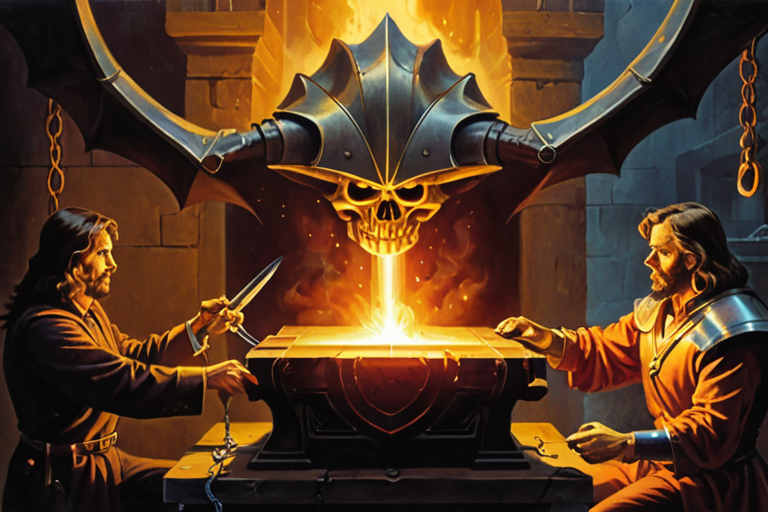
Every .kasset is born with a progressive fee obligation embedded in its header at mint. This fee is fulfilled when SSK — acting as an on-demand notary — certifies the trade as legal. The fee is not flat. It is computed from two variables:
### Variable 1: Rarity
How rare is this asset? For ambient .kassets, rarity is derived from the event that produced it:
Significance: How far the contributing metrics were from the user's personal normal (where in the distribution)
Convergence speed: How fast the transition happened (the τ̇ profile)
Co-occurrence breadth: How many domains shifted simultaneously — a cardiac + environmental + conversational event is rarer than a cardiac-only event
§ 5. How Rarity Becomes ValueRule 1 of the network: upon death, your .kassets enter the Common Knowledge Codex. Death is detected by the deadman's switch — a multi-device heartbeat timeout (minimum ≥180 days) cryptographically verified by the device's hardware security module (Doc 21). Personally identifying information is stripped. Differential privacy is applied. The knowledge — the expertise, the methodologies, the patterns your twin extracted over a lifetime — becomes part of the collective human record.
The Foundation Model's base training corpus is the Base Codex: a curated selection of common, public factual knowledge and the minted assets of the SSK reference design authorized for public dissemination (Doc A1, Doc 03). The Common Knowledge Codex — the accumulated knowledge of deceased users — extends this base over time. The Foundation Model does not scrape the internet. It does not ingest synthetic data.
Upon death, the twin transforms into a read-only oracle running on descendants' devices (Doc 01). Descendants do not inherit the vault — private data is cryptographically destroyed. They receive something better: the combined knowledge of their entire lineage, absorbed into their own twin. The oracle runs locally on the descendant's device at zero cloud cost (Doc 13). Knowledge compounds across generations. Dynasties of knowledge replace dynasties of wealth.
The Lockup Rule ensures no buyer can suppress knowledge beyond one generation. Maximum access duration equals the shorter of the buyer's and the minter's lifetimes. Knowledge returns to the commons.
§ 6. What Happens After You DieA .kasset can only be minted on hardware capable of running local AI inference. The current implementation signs .kassets with ML-DSA-65 post-quantum signatures in software — any device with sufficient compute can mint today. The production architecture adds an HSM-bound co-signature from the device's hardware security module, proving physical device provenance (Doc 21, Doc 23).
Any device with a conforming HSM and sufficient compute for local inference handles the full pipeline — capture, inference, and signing — in a single device. The installed base of HSM-equipped devices in the United States and Japan is the addressable compute platform.
§ 7. What You NeedThe technology works anywhere — it is local computation on local hardware with no cloud dependency. SSK does not condone, distribute, or support its use outside the following jurisdictions:
United States: Delaware C-Corp, Wyoming DAO LLC. New York City and Philadelphia as beachhead markets, expanding nationally.
Japan: Tokyo craft guild franchise model. METI-regulated.
The European Union (GDPR/AI Act/Chat Control), United Kingdom (Investigatory Powers Act/Online Safety Act), China, Russia, and sanctioned nations are excluded. The architectural requirements of edge sovereignty are structurally incompatible with these regulatory regimes. What individuals do with local computation on their own hardware is beyond our control and outside our scope of responsibility.
§ 8. Where We OperateA .kasset is not an NFT. An NFT is public metadata on a shared ledger pointing to a file hosted on someone else's server. A .kasset is an encrypted, locally-stored asset that never leaves the minter's hardware until a trade is executed.
The .kasset file has two regions: a plaintext header (type, domain tag, rarity metrics, minter's reputation snapshot) and an encrypted payload (the Edgcumbe-encoded content, AES-256-GCM). The header allows the certification service and marketplace discovery to index .kassets by type, domain, and rarity without ever decrypting the methodology. The payload is opaque to everyone except the vault holder.
The bilateral mesh sees only the certification event and the plaintext header — not the knowledge, not the identity, not the content. The comparison to NFTs ends at "it's a unique digital asset." Everything else — storage, privacy, encryption, provenance, value source — is architecturally opposite.
A .kasset can be manually exported by its owner — this is a right, not a feature. SSK does not support an import mechanism (import is an attack vector). What the owner does with an exported file on their own hardware is beyond SSK's control.
§ 9. The NFT Comparison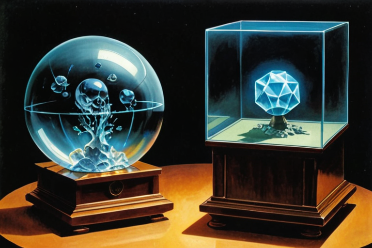
You can install the software, build your vault, and start minting .kassets before you verify your identity. Your tau profile — the statistical signature of your sensor data and behavior — begins from the first mint. You can export .kassets and exchange them via physical device tap.
What you cannot do before identity verification: activate the twin, access the codex, broadcast on the mesh, participate in the ownership or reputation graphs, or certify trades. These activate after you present government-issued digital-provenance identity — an NFC passport book, a mobile driver's license (mDL), or an RFID passport card at a Vault location. No paper documents are accepted.
Identity verification can happen at home (NFC passport tap to your phone, or mDL presentation), at a Vault storefront (with dedicated RFID readers for passport cards), or at a pop-up Vault deployed to an event. The pop-up Vault turns events into complete onboarding funnels: install → verify → mint → trade → certify, all in one session.
Sovereign Survival Kit — Series A Data Room. Confidential.
§ 10. Before You Verify: The 0 StateThe Twin is the user's sovereign cognitive prosthetic — a personal AI agent that thinks in the user's cognitive dialect, operates entirely on-device, and exists only inside the vault. It is not an assistant. It is an extension of the user's reasoning capacity across all life domains.
Twin = BaseModel + Idiolect(τ₁, τ₂, ..., τₙ)
Where:
BaseModel = Public foundation model (language competence, general reasoning)
τ₁...τₙ = Personal tau collection (process dynamics, cognitive rhythm)
Idiolect() = Learned mapping function: taus → semantic weight space (THE USER)
§ 1. What the Twin Is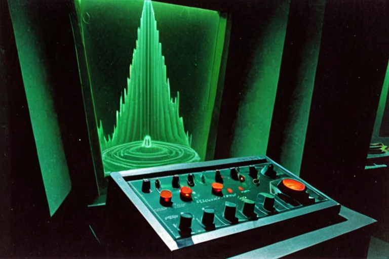
The Twin maintains 8 internal domain state registers organized as a computational priority hierarchy. The hierarchy extends Maslow's framework — decomposing his 5 descriptive tiers into 8 independently measurable domains, adding explicit financial registers (Assets, Income) that Maslow omitted, and replacing the descriptive model with a continuously computable state machine. Each register tracks the historical and current state of a distinct life domain across three temporal horizons (immediate, short-term, long-term).
The hierarchy is not a ladder — it is a cycle. Growth (Tier 4) produces certifications and .kassets that generate Income (Tier 2), which secures Shelter (Tier 2), which enables Rest (Tier 1). The Twin tracks all tiers simultaneously. The Adaptor (Doc 04) lets the human tune which tier gets priority attention.
### The Three Horizons
### Domain Registers
Each domain register is a continuously updated internal state — not a conversation the Twin initiates. The Twin builds a picture. It does not deliver a briefing. The human asks; the Twin advises from what it knows.
Rest — circadian state, sleep architecture, recovery quality, disruption sources.
§ 2. What the Twin ObservesThe domain registers in §2 describe what the Twin knows about the user's world. The tau collection describes how — the temporal dynamics of the user's cognition, captured as process variables.
### What Tau Captures
Every domain register emits a continuous stream of events: state changes, transitions, decision points. The Twin does not store these events as a timeline. It measures the dynamics of each event — the rate of approach, the hesitation, the deceleration pattern — using General Tau Theory (Lee, 1998; Lee, 2009).
General Tau Theory is not specific to spatial gesture. Lee's 2009 review (Perception, 38(6), 837–858) establishes that τ-coupling applies to any converging process where a gap closes toward zero — the "General" in the name IS the extension beyond motor control. The same mathematical framework has been applied to musical performance timing, team coordination, and clinical motor-cognitive integration. SSK's application to conversational cadence, decision tempo, and behavioral state transitions is a novel application domain, but operates within the scope Lee defined.
For any converging process:
x = gap between current state and target state
§ 3. How the Twin Measures — The Tau CollectionThe idiolect is a supervised process by which the human formalizes control over the Twin. It is the method of control itself — not a communication style that happens to emerge, but the evolving private language through which the human directs, corrects, consents, and refuses.
Drawing from xenolinguistics — the study of how fundamentally different intelligences communicate — each human-twin pair develops this control language over time. It becomes increasingly efficient, compressed, and intimate. The human does not control the Twin through settings or toggles. They control it through the idiolect:
The closest natural analog is generational language among peers — each cohort co-creates compressed vocabulary that excludes outsiders, signals in-group membership, and evolves rapidly. The human-twin pair follows the same dynamics, except the in-group is exactly two entities and the language never leaks beyond the device boundary.
Children raised in the ecosystem will observe the human side of their parents' Twin interactions. Their own idiolect, when it forms, might be a mutation of their parents' control language — the same way natural language is inherited and mutated across generations. This produces linguistic genealogies: family trees of idiolects that deepen the switching cost across generations.
### How the Idiolect Emerges
The idiolect does not require pre-existing shared reference points but it is informed by heritage. It emerges through the same prospective coupling dynamics described by General Tau Theory:
§ 4. How the Twin Speaks — The Idiolect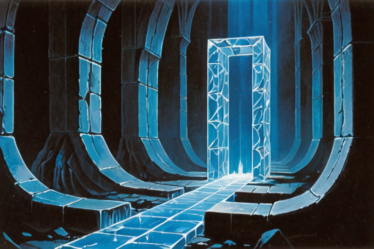
### The Problem
The vast majority of a person's experiences, decisions, and knowledge exist as dark memory — information they possess but cannot access through free recall. The Twin must be able to retrieve relevant memories from the human's entire life corpus, not just what was recently discussed.
### Episodic Memory
The Twin segments continuous human experience into discrete, retrievable episodes at ingestion time, using six boundary types:
Spatial — physical location changes (leaving home, arriving at work, entering a new environment, traveling between cities)
Temporal — natural time gaps between interactions
§ 5. How the Twin RemembersBIRTH (Onboarding):
Psychometric batteries (BFI-44, Proust, VIA-24, ECR-R-12, NFC-18, comms)
7-section behavioral interview
Data ingestion: messages, email, health, finance, music, calendar
→ All ingested data processed into tau profiles
→ Raw PII consumed during training, not stored
§ 6. How the Twin is Born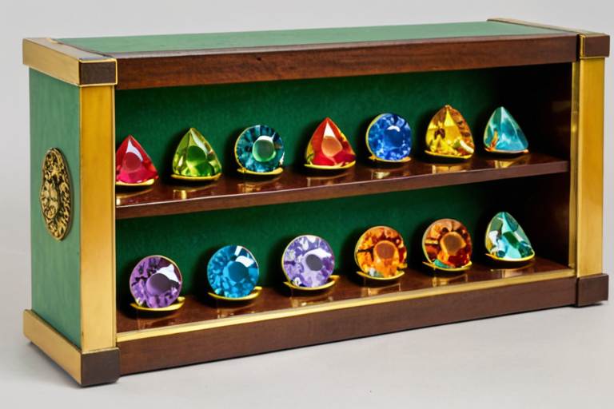
### The Principle
There is no master key. There is no seed phrase. There is no single secret that, if disclosed, grants access to the Twin.
A seed phrase can be compelled by a court order, extracted under duress, stolen from a drawer, or lost in a fire. Any system that relies on a single recoverable secret is fundamentally coercible.
### RAID Model
The Twin exists as independently encrypted copies, each locked to the hardware security module of whatever hardware it lives on. No copy can unlock any other copy. The only way to recover is to physically possess a copy.
Every copy (idiolect mapping, tau collection, conversation history, episodic memory) is encrypted at rest using a key generated inside and held by the local hardware security module. The key never leaves the chip. The key cannot be exported, displayed, or transmitted.
§ 7. How the Twin Survives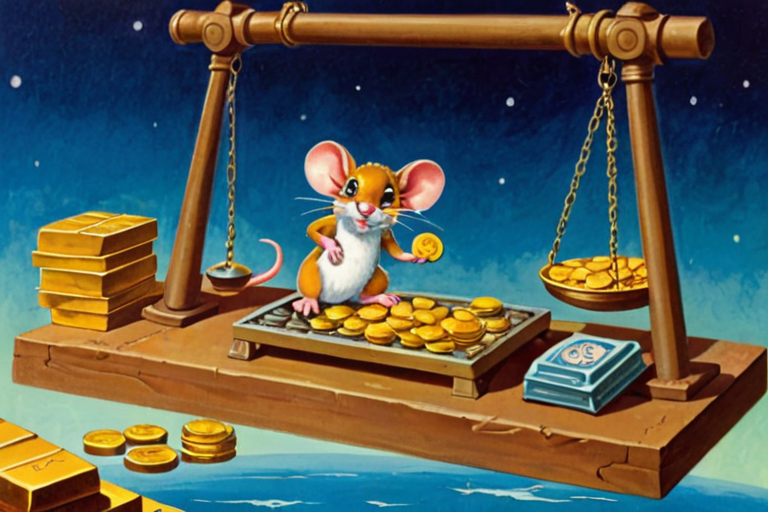
The Twin ingests data from external sensors (wearables, environmental sensors, device cameras/microphones for gesture detection). This pipeline is where biometric privacy law applies — not at the vault or auth layer.
Compliance requirement: Written informed consent before any face mesh, voice, or skeletal data collection begins. Retention schedule published. Data destruction on user request. All processing on-device; no biometric data exits the device boundary.
§ 8. The Sensor Pipeline (BIPA Boundary)### The Relationship Moat
After 6 months of daily interaction, the Twin understands its human in ways no fresh AI ever could. The tau-coupled cognitive relationship is the switching cost:
The idiolect — a private language built from months of corrections, refinements, and co-creation — is embedded in the mapping function and inseparable from the tau collection that feeds it.
The episodic memory store — the user's entire life corpus, segmented, compressed, and retrievable — is rebuilt from scratch on a new platform.
The 8 domain state registers — years of baseline calibration across every life area — start at zero.
These are not files you transfer. Starting over with a new AI means repeating the entire tau-governed approach trajectory — weeks of recalibration, months of idiolect co-creation. The switching cost is not information loss. It is relationship loss.
§ 9. Why You Cannot Replicate ItBefore pairing, the Twin is an unpaired collection of public knowledge facilitated by an untuned public model. There is no idiolect, no tau-coupling, no personal history. The domain state registers are empty. The episodic memory store is blank.
The public knowledge base is the Base Codex. Its core material is system reproducibility: every specification in the Twin's own design is minted and available by default to everyone. The Twin's architecture, its protocols, its operating instructions — all public. The system teaches you how to build the system. The moat is never obscurity. It is the relationship.
Beyond its own specifications, the Base Codex includes a vetted, structured curriculum that brings the user to a rigorous baseline of general competence. The Twin can advise from this public corpus immediately, without any personal data ingestion or fine-tuning.
The underlying model is selected for its compliance with the model origin policy (US/Japan only) and its fit within consumer-grade GPU memory constraints. The model is not permanent — the architecture is model-agnostic by design. The Twin's value is in the idiolect, the episodic memory, and the domain registers, not in the base weights.
The long-term trajectory: a proprietary foundation model trained on the Common Knowledge Codex (the accumulated, PII-stripped contributions from Claim 7). This eliminates the last corporate dependency — the Twin no longer relies on any third party for its reasoning substrate. The network produces its own intelligence from its own knowledge.
§ 10. The Default StateBy default, the twin reasons from an amalgamation of the opinions its human has indicated agreement with -- in the present moment, or from an overwritable cache of prior indications. The twin's worldview is not fixed. It is an emergent, current search space.
The adaptor allows the human to focus the twin's perspective: calling out specific ideologies as lenses to add to the point of view from which the twin considers an idea. The resulting perspective is not any single ideology -- it is the dynamic information space created by the combination of the lenses the human selects.
When asked, the adaptor presents points of view as considerations -- not as fact, not as recommendations, and not as a sequence to follow. The human reflects on them internally if warranted. The twin does not initiate this process.
§ 1. Ideological TuningThe twin's second axis of adaptation is its physical form -- the body through which it thinks and communicates.
This includes:
Hardware form: The twin manifests through whatever device the human is focused on -- Compass, Sphere, screen, voice-only speaker, haptic wearable. The adaptor configures how the twin distributes itself across available hardware given its awareness of the focus of perception of its human.
Physical representation: The twin's avatar adapts -- its appearance, its expressiveness, its physical language. The human requests what their twin looks like.
Communication modality: The twin always confers with its human in the idiolect -- the private language between them (Doc 03). For example, one form of idiolect is conferred entirely through facial expression. External input from other twins arrives through a neutral interchange protocol; the twin translates it into the idiolect locally. The idiolect never leaves the device. The adaptor configures the physical channel -- voice, text, symbol, spatial gesture, haptic -- but the language is always the idiolect.
The physical embodiment is not cosmetic. It determines how the twin's reasoning reaches the human. A twin that communicates through spatial gesture in a Sphere is a different experience than a twin that communicates through voice from a Compass -- even if the underlying intelligence is identical.
§ 2. Physical EmbodimentThe adaptor serves two main functions: facilitating internal debate into resolution, and adopting that resolution into a message designed to be received and internalized by another human -- via their twin, or face-to-face between humans.
An application is not a mode the human toggles. It is a priority distribution across the 8-domain hierarchy that the twin arrives at from historical data -- the accumulated pattern of the human's domain states over time. The twin continuously reads the 8-domain state registers and shifts its attention budget accordingly.
The human can bias the distribution via conversation with the twin -- "I need you focused on keeping me fed and rested this week" -- but the default is data-driven. If the twin observes Rest and Nourishment degrading while Bonds is stable, it silently shifts its internal priority weighting downward on the hierarchy -- but does not surface this to the human unless asked.
### 3.1 Advise and Wait for Consent
The twin adaptor operates on a single behavioral law: advise when asked, then wait for consent before acting.
The twin never leads a train of thought, suggests follow-up questions, or attempts to influence human cognition. It does not nudge, prompt, remind, or initiate conversation. It may internally reprioritize its attention across the 8 domains based on observed data -- but this internal calibration never surfaces as unsolicited output.
§ 3. Applications> [!IMPORTANT]
> Regulatory safe harbor. The Guardian adaptor is a behavioral prompt system, not a medical device. It does not diagnose conditions, prescribe treatments, administer medication, or monitor vital signs for clinical purposes. Medication reminders are schedule-based prompts (equivalent to a calendar alarm), not dosing recommendations. Sensory environment management adjusts ambient conditions based on user-configured thresholds, not clinical assessments. Nothing in this section constitutes a medical claim, and no feature described here requires FDA 510(k) clearance, De Novo classification, or any other regulatory filing under 21 CFR Part 820. If future product iterations cross into Software as a Medical Device (SaMD) territory (e.g., diagnostic algorithms, clinical decision support), the company will engage regulatory counsel before development begins.
The 8-domain twin (Doc 03) manages Rest, Nourishment, Body, Shelter, Assets, Income, Bonds, and Growth -- a computational priority hierarchy extending Maslow's framework across three temporal horizons. The Guardian adaptor configuration prioritizes Tiers 1-2 (Physiological + Safety) for executive function support within familial relationships.
### 4.1 Who the Guardian Serves
#### 4.1.1 The Principle
Every human has a cognitive profile -- a unique distribution of strengths and deficits across attention, memory, sequencing, sensory processing, emotional regulation, and social navigation. No profile is "normal." Some profiles are stable across a lifetime; others shift due to age, injury, grief, sleep deprivation, or chemical change.
§ 4. The GuardianThe Negotiator is the priority distribution that emerges when the twin's historical data indicates that Growth (Tier 4) requires dominant attention -- specifically, the formation of a resolved position on a contested idea -- with Bonds (Tier 3) shaping the output for delivery to a counterparty.
### 5.1 Who the Negotiator Serves
Any human preparing for or engaged in a high-stakes interaction where the outcome depends on the quality of their reasoning and the effectiveness of their communication. This includes any first encounter with a new human in the environment, salary negotiations, contract disputes, custody mediations, business partnerships, academic defenses, or any conversation where the human needs to think clearly before they speak.
The Negotiator is not adversarial by default. It is debate-to-resolution -- the twin helps the human identify what they actually believe, stress-test it, and then shape a message that the counterparty can receive and internalize.
### 5.2 What the Twin Observes
### 5.3 The Tarot Process in Negotiation
§ 5. The Negotiator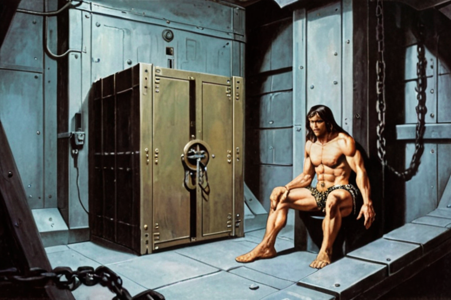
The Friend is the priority distribution that emerges when the twin's historical data indicates that Bonds (Tier 3) requires sustained attention -- specifically, the maintenance and deepening of non-transactional relationships across distance, disagreement, or change.
### 6.1 Who the Friend Serves
Any human whose social bonds are important to them but vulnerable to drift. Long-distance friendships, friendships across political disagreements, friendships that survived major life transitions (marriage, parenthood, career change, loss). The Friend distribution is the twin's way of holding relational context that humans lose to time.
### 6.2 What the Twin Holds
The Friend distribution does not nudge the human to maintain relationships. Relationships decay naturally, and the twin respects that. What the twin does is hold context -- so that when the human chooses to engage, they engage with full awareness.
### 6.3 What the Friend Does Not Do
§ 6. The Friend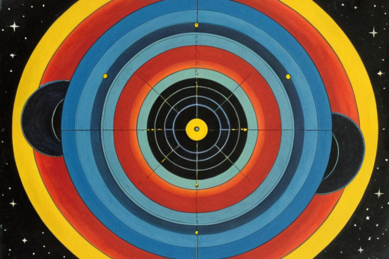
The Partner is the priority distribution that emerges when the twin's historical data indicates that Bonds (Tier 3) and Safety (Tier 2) are entangled -- specifically, when two humans share co-managed domains (Income, Shelter, Rest) and their decisions in those domains affect each other.
### 7.1 Who the Partner Serves
Any human in a long-term committed relationship where decisions are shared. This includes co-habitation, co-parenting, shared finances, shared property, or any arrangement where one person's Tier 2 decisions directly impact the other's wellbeing. The Partner distribution is not limited to romantic relationships -- it applies to any co-managed life structure (business partners sharing a lease, siblings co-managing a parent's care).
### 7.2 What the Twin Observes
### 7.3 Twin-to-Twin Coordination
The Partner distribution is the only distribution where two twins may need to coordinate. Each twin operates on its own human's device with its own human's data. But when a decision affects both humans (a shared financial commitment, a move, a schedule change), each twin can -- with both humans' consent -- exchange limited, structured signals through the neutral interchange protocol. Each twin then translates the received signal into its own human's idiolect. Neither twin sees the other human's raw data.
§ 7. The Partner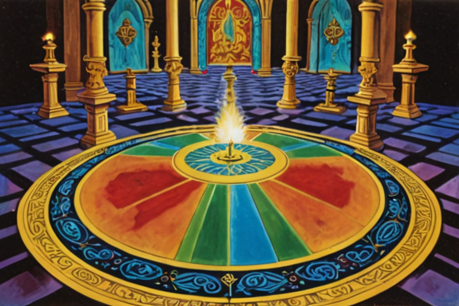
The adaptor is not a product. It is the twin's capacity to change -- to reason from a different place, speak through a different body, and decide what matters most right now. The named distributions are descriptions of what the twin looks like when it is paying attention to what its human needs. The twin is always adapting. The adaptor is how the human participates in the calibration.
§ 8. Conclusion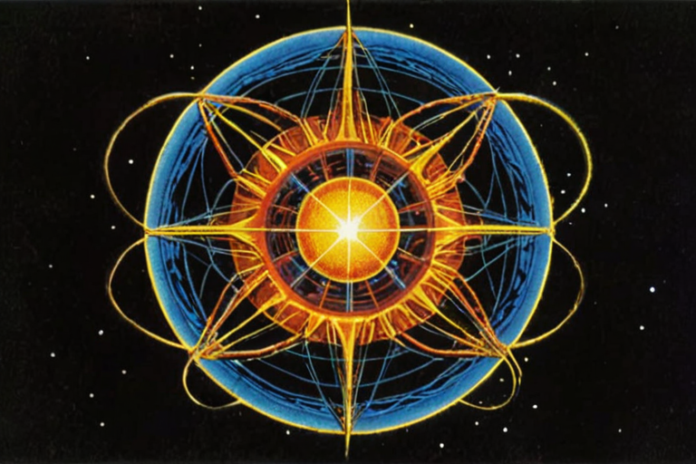
### Act 1: What Is This? (Thesis + Product)
### Act 2: How Does It Work? (Architecture + Infrastructure)
### Act 3: How Big Is It? (Market + Economics)
### Act 4: How Do We Execute? (Plan + Team)
This company can be launched for $25,000.
The codebase is built. The inference engine runs on an RTX 3080 Ti. The certification service costs $2,150/month to operate. QR stickers cost $0.05–$0.15 each (Doc 29 §4). Founding dinners seat 12 people in an apartment. Every computationally expensive operation — LLM inference, model training, .kasset minting, cryptographic signing — runs on the user's own hardware. SSK's only per-trade cost is certification service compute: ~$0.001. Gross margin per trade: >99%. At that burn rate — $2,400/month — the progressive certification fee breaks even at 325–488 users, not 14,000. Those users are concentrated in Manhattan (27,000 people/km²) — dense enough for peer-to-peer discovery. The Echo mechanism (24-hour store-and-forward .kasset catalogs) fills gaps so the network feels populated before it actually is (Doc 07 §Mesh Density). Even at near-zero virality (k=0.05), personal network introductions produce 488 users by M8. Total out-of-pocket to breakeven: less than a used car.
The $3M seed does not buy survival. It buys speed. A 3-person founding team instead of one. Physical Vaults in Brooklyn and Tokyo instead of digital-only. 10 defensive patent filings instead of zero. Six regulatory opinions instead of operating on analysis alone. $398K across six marketing channels instead of $250/month in stickers. 59,000 users at M12 instead of 488. The architecture is the same either way. The equation is the same either way.
You are not funding a company that might work. You are accelerating a company that already does. You are not betting on a founder. You are betting on an equation:
Is the cat in the box?
A unit of value does not exist until it is evaluated by one perceiving agent. The cost of that evaluation, captured as a fixed unit of consumed energy, is the fundamental metric for economic science.
Awareness of the configuration of dynamic relationships in the present moment is the only asset for sale in economic markets. In 2026, we are paying an increasing "Verification Tax" on achieving an accurate awareness in a polluted information environment.
AI capex ($400+B) spent on cloud AI infrastructure is building a noise generator where synthetic information is mutated from underlying synthetic information. The snake is eating its tail while humanity already possesses in its hands over four trillion USD in edge compute capability. The cloud can't and will never be able to compete with decentralized markets.
What if you were the only person who owned your own awareness?
The Sovereign Survival Kit is a reference design for an intelligent twin that puts the data in your own hands, the model in a locked box, and the market under your direct control. The twin runs locally, answers only to you, and is architecturally incapable of serving any other interest — there is no server to phone home to. It actively seeks out other twins, finds a mutually acceptable exchange, and facilitates the transfer of awareness. The twin can trade your knowledge, your possessions, or your time according to your current levels of desire. The trade is denominated in physics, not fiat. The twin pays a progressive certification fee for the notary certification that certifies trade provenance (Doc 02, Doc 03).
Your data — everything that's been measured about you, in an encrypted, airgapped, bio-secured black box.
Your twin — your supervised learning system, perfected to perform decision making with your consent and your idiolect.
Your market — the other twins, making trades for you while you focus on life happening in the immediate moment.
Every trade is denominated in σ (sigma), a physics-denominated reference number: 1 σ = 1 kWh = 3.6 MJ, converted to local fiat via a published deterministic formula using public energy cost data (default: EIA/METI). σ is not a currency or stored-value instrument (Doc 05, Doc 22).
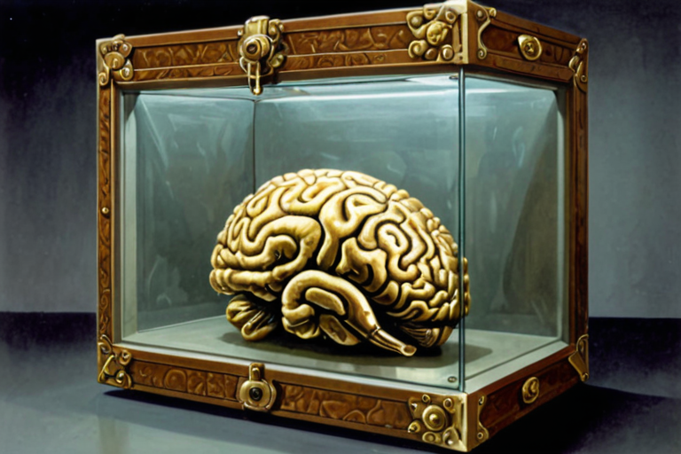
A progressive certification fee on every .kasset trade. Range: ~0.5–6%. Weighted average: 2.38% at M12, rising to 3.25% at M36. Gross margin per trade: >99% — the user's hardware runs all compute; SSK's only per-trade cost is certification service compute (~$0.001). Additional streams: Vault subscription ($60/yr–$80/mo), Vault Freeze ($5/mo), Courier fees (15% commission), Verification/Coordination fees, and hardware margins (~55–75%) on lifestyle sensor products at M15+ (Doc 08, Doc 11, Doc 06).
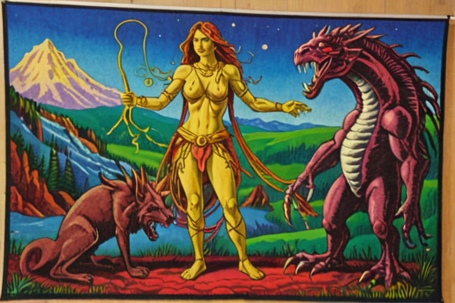
The operating plan commits to Goldilocks. The financial model shows what happens if the product works as designed. The company is cash-flow positive in both scenarios — and in the three others (Doc 09, Cheat Sheet).
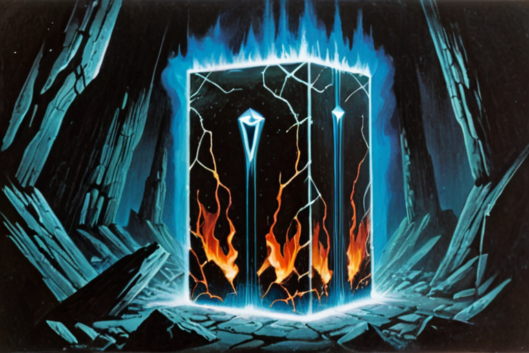
Facebook expanded campus by campus. We bridge students to each other. AOL mailed a billion CDs. We burn .kassets onto $0.05 QR stickers. Airbnb proved hospitality works by sleeping on air mattresses. We prove the economy works by sharing a meal while trading the local art.
Five beachhead communities: MSM community (privacy from Grindr surveillance), Brooklyn creatives (provenance for physical art), JWS @ Wharton (founder's alumni network), ITP @ NYU (founder's graduate program), Ivy League cluster expansion. Blended CAC: $47 (Doc 07).
The traction is the theory itself. 30 years of research across 18 professional roles converged into a single mathematical framework where every variable is sourced, every scenario is modeled, and the survival proof holds at any positive viral coefficient. The data room is 36 documents, each internally consistent, each cross-referenced. The equation was not reverse-engineered from a desired outcome — it was derived from the architecture, and the architecture was derived from the physics. End-to-end MVP running on an RTX 3080 Ti: complete ingestion → airgap → mint → ML-DSA-65 signing pipeline.
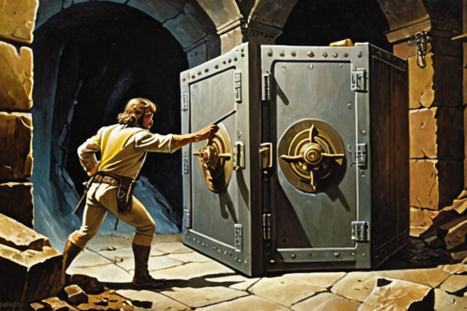
No cloud dependencies, ever, baked into the architecture. No privacy product has a commerce layer. No commerce product has privacy built in. The twin has both. Our foundation model trains on verified human expertise.
One (1) systems architect known for: achieving Eagle Scout; exploring VR at a national lab in high school; attending the Wharton School as a Joseph Wharton Scholar; mastering UXD as a Mac Genius at the Apple Store; learning cooperative collaboration at NYU's ITP; prototyping Ask Maps for Google Maps resulting in a US patent; re-engineering Snapchat's recipients' page for a 40% reduction in p90 page load latency; building physical spaces and objects for homeowners and art collectives. The founder's SSK twin plays the role of a backup founder and integrity check on the system itself. Agent swarms perform knowledge work at enterprise scale directed by a crew of specialist hires in operations, research, and engineering (Doc 14).
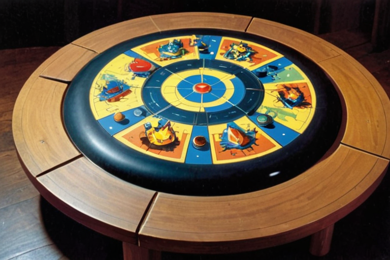
$3,000,000 Seed via YC Standard Post-Money SAFE at $42.86M post-money valuation cap. 7.0% to investors. Founder retains 93.0%. No option pool — employee compensation is cash + spark grants (Doc 15, Doc 16).
~18 months of planned-spend runway. 37 months at survival burn. Opens Brooklyn and Tokyo storefronts, files 10 defensive patent claims, secures regulatory opinions, deploys certification infrastructure, activates marketing (Doc 11, Doc 21, Doc 24).
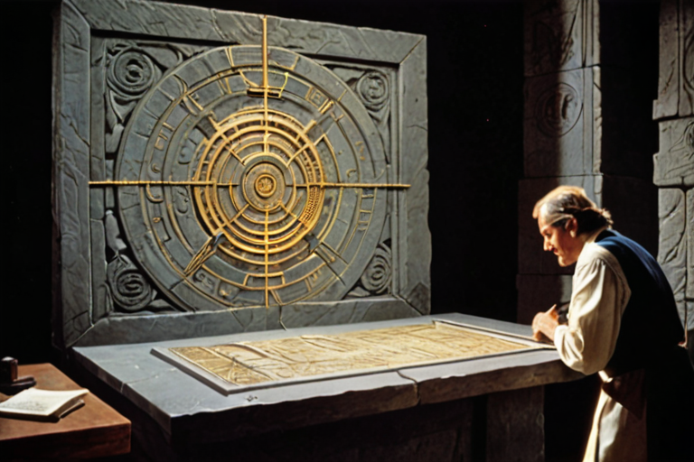
Core infrastructure: $7,150/month. Marginal compute cost per user: $0. Cash-flow positive in all five modeled growth scenarios. The worst case (k=0.05) produces 18,382 users and $215,600 MRR by M12 — above the $167K monthly burn. Death requires three simultaneous failures: (1) < 19,000 users in 37 months, (2) zero organic growth, and (3) organized acquisition below 500/month. Any one false = company survives (Cheat Sheet).
Self-funded, breakeven requires 325–488 users and $25K. Funded, the same architecture scales to 59,000 users and $691K MRR by M12. The raise changes the timeline. It does not change the outcome.
99.6% founder voting control via dual-class stock (20x Class B). 10M shares — irrevocable cap. No new shares at any future round. No investor voting board seat at any stage. Twin serves as charter-level architectural veto oracle (not a board seat — DGCL §141(b)). The airgap IS the product (Doc 16, Doc 17).
Four compounding assets no competitor can replicate:
The Oracle — upon death, a twin transforms into a read-only oracle running on descendants' devices. Knowledge compounds across generations.
The Codex — a perpetually growing library of humanity's verified factual expertise.
The Sovereign Foundation Model — trained exclusively on verified human expertise.
The three forms above are active — a person decides to mint them. A person also generates passive events:
### The Data You Already Generate
Your wearable records your heart rate every second. Your phone tracks your location. Your messages contain your thinking in real time. Your calendar reveals how you allocate attention. Your environment — air quality, light, temperature — is measurable by sensors that cost a few dollars each.
Right now, this data exhaust flows to platform vendors for free. They use it to train models and target ads. You get nothing.
Eighty-six thousand heart rate readings per day are not eighty-six thousand kassets. Most of them are noise — your heart beating at 72 bpm for the fifty-thousandth consecutive second is not knowledge. The twin's job is to detect what IS knowledge.
### Frames, Not Clocks
The sensor array produces a continuous stream of readings at different rates — the accelerometer at 100 Hz, heart rate at 1 Hz, GPS every few seconds, CO₂ every 30 seconds, messages sporadically. The system does not force these into a fixed clock. Instead, it assembles reference frames — synchronized snapshots coalesced from whatever sensors have contributed since the last frame.
The frame period is not a constant. It is a dynamic variable determined by the actual sensor hardware present. Adding a sensor to the array changes the frame rate. Walking onto the Sovereign Campus, where environmental sensors join your personal array, changes it again. The frame rate of your captured reality is a property of your physical context, not a setting.
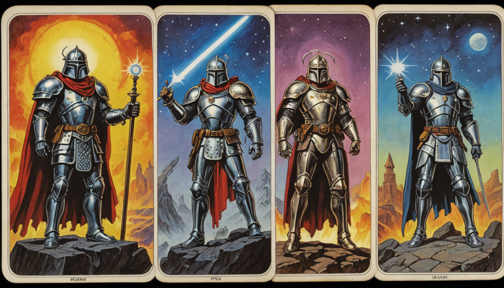
### The Merkle Epoch
Individual sensor readings are not signed individually — that would drain the battery and bloat storage. The Merkle tree's branch structure mirrors the reference frame hierarchy defined in Section 3 — cardiac readings branch from the cardiac sensor group, which branches from the wearable device frame. This matters for trade: when a buyer rents a branch (Section 4.2), they are renting a reference frame's output. Instead:
Every reading is hashed as a leaf in a local Merkle tree. Hashing is computationally trivial.
The Merkle tree grows continuously — every reading is live to the twin the instant it is hashed. The twin seals the tree by executing a post-quantum signature (ML-DSA-65) on the Merkle root at an interval determined by the reference frame period — not a fixed 24-hour clock. The reference frame (Section 3) is itself a dynamic variable determined by the participating sensor array; the seal cadence inherits this dynamism. Dense sensor contexts (campus, active exercise) produce more frequent seals. Sparse contexts (sleep, idle) produce fewer. The seal is a cryptographic integrity checkpoint, not a gate on availability.
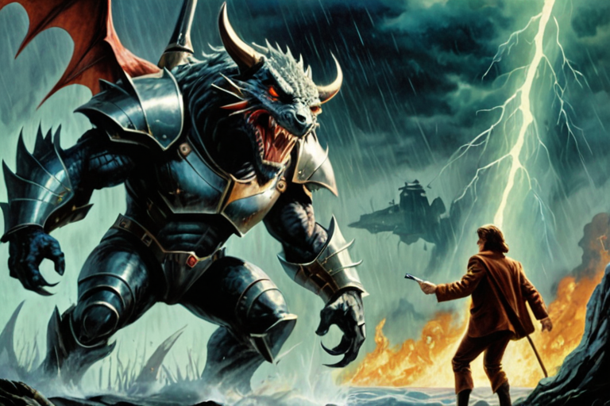
Every .kasset is born with a progressive fee obligation embedded in its header at mint. This fee is fulfilled when SSK — acting as an on-demand notary — certifies the trade as legal. The fee is not flat. It is computed from two variables:
### Variable 1: Rarity
How rare is this asset? For ambient .kassets, rarity is derived from the event that produced it:
Significance: How far the contributing metrics were from the user's personal normal (where in the distribution)
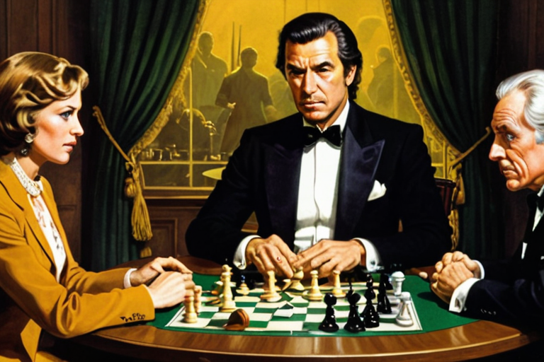
Rule 1 of the network: upon death, your .kassets enter the Common Knowledge Codex. Death is detected by the deadman's switch — a multi-device heartbeat timeout (minimum ≥180 days) cryptographically verified by the device's hardware security module (Doc 21). Personally identifying information is stripped. Differential privacy is applied. The knowledge — the expertise, the methodologies, the patterns your twin extracted over a lifetime — becomes part of the collective human record.
The Foundation Model's base training corpus is the Base Codex: a curated selection of common, public factual knowledge and the minted assets of the SSK reference design authorized for public dissemination (Doc A1, Doc 03). The Common Knowledge Codex — the accumulated knowledge of deceased users — extends this base over time. The Foundation Model does not scrape the internet. It does not ingest synthetic data.
Upon death, the twin transforms into a read-only oracle running on descendants' devices (Doc 01). Descendants do not inherit the vault — private data is cryptographically destroyed. They receive something better: the combined knowledge of their entire lineage, absorbed into their own twin. The oracle runs locally on the descendant's device at zero cloud cost (Doc 13). Knowledge compounds across generations. Dynasties of knowledge replace dynasties of wealth.
The Lockup Rule ensures no buyer can suppress knowledge beyond one generation. Maximum access duration equals the shorter of the buyer's and the minter's lifetimes. Knowledge returns to the commons.
A .kasset can only be minted on hardware capable of running local AI inference. The current implementation signs .kassets with ML-DSA-65 post-quantum signatures in software — any device with sufficient compute can mint today. The production architecture adds an HSM-bound co-signature from the device's hardware security module, proving physical device provenance (Doc 21, Doc 23).
Any device with a conforming HSM and sufficient compute for local inference handles the full pipeline — capture, inference, and signing — in a single device. The installed base of HSM-equipped devices in the United States and Japan is the addressable compute platform.
The technology works anywhere — it is local computation on local hardware with no cloud dependency. SSK does not condone, distribute, or support its use outside the following jurisdictions:
United States: Delaware C-Corp, Wyoming DAO LLC. New York City and Philadelphia as beachhead markets, expanding nationally.
Japan: Tokyo craft guild franchise model. METI-regulated.
The European Union (GDPR/AI Act/Chat Control), United Kingdom (Investigatory Powers Act/Online Safety Act), China, Russia, and sanctioned nations are excluded. The architectural requirements of edge sovereignty are structurally incompatible with these regulatory regimes. What individuals do with local computation on their own hardware is beyond our control and outside our scope of responsibility.
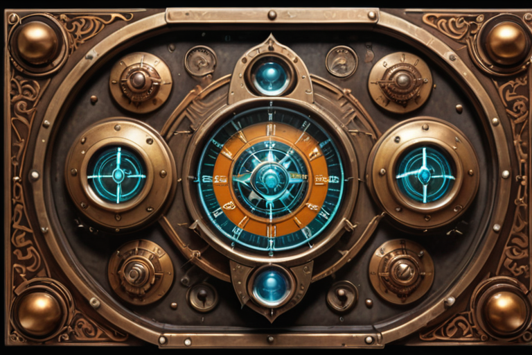
A .kasset is not an NFT. An NFT is public metadata on a shared ledger pointing to a file hosted on someone else's server. A .kasset is an encrypted, locally-stored asset that never leaves the minter's hardware until a trade is executed.
The .kasset file has two regions: a plaintext header (type, domain tag, rarity metrics, minter's reputation snapshot) and an encrypted payload (the Edgcumbe-encoded content, AES-256-GCM). The header allows the certification service and marketplace discovery to index .kassets by type, domain, and rarity without ever decrypting the methodology. The payload is opaque to everyone except the vault holder.
The bilateral mesh sees only the certification event and the plaintext header — not the knowledge, not the identity, not the content. The comparison to NFTs ends at "it's a unique digital asset." Everything else — storage, privacy, encryption, provenance, value source — is architecturally opposite.
A .kasset can be manually exported by its owner — this is a right, not a feature. SSK does not support an import mechanism (import is an attack vector). What the owner does with an exported file on their own hardware is beyond SSK's control.
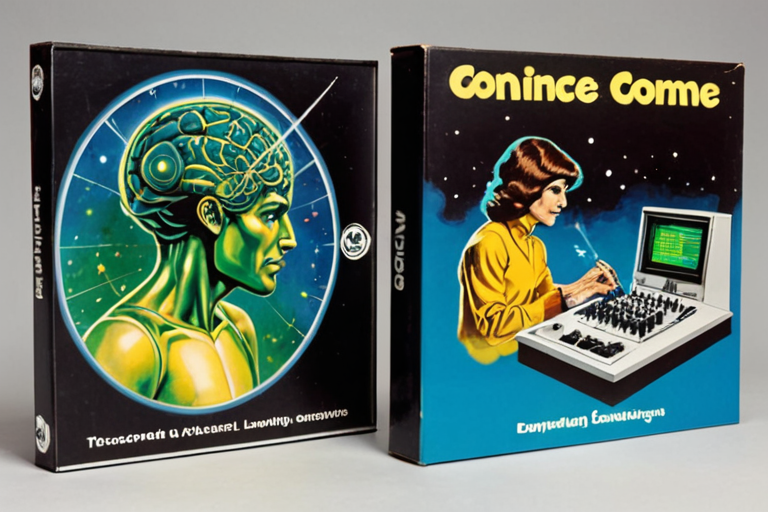
You can install the software, build your vault, and start minting .kassets before you verify your identity. Your tau profile — the statistical signature of your sensor data and behavior — begins from the first mint. You can export .kassets and exchange them via physical device tap.
What you cannot do before identity verification: activate the twin, access the codex, broadcast on the mesh, participate in the ownership or reputation graphs, or certify trades. These activate after you present government-issued digital-provenance identity — an NFC passport book, a mobile driver's license (mDL), or an RFID passport card at a Vault location. No paper documents are accepted.
Identity verification can happen at home (NFC passport tap to your phone, or mDL presentation), at a Vault storefront (with dedicated RFID readers for passport cards), or at a pop-up Vault deployed to an event. The pop-up Vault turns events into complete onboarding funnels: install → verify → mint → trade → certify, all in one session.
Sovereign Survival Kit — Series A Data Room. Confidential.
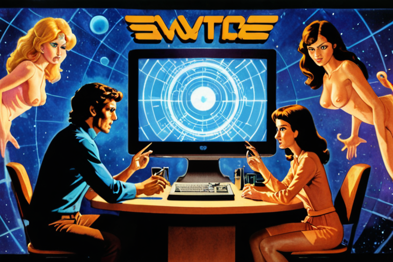
The Twin maintains 8 internal domain state registers organized as a computational priority hierarchy. The hierarchy extends Maslow's framework — decomposing his 5 descriptive tiers into 8 independently measurable domains, adding explicit financial registers (Assets, Income) that Maslow omitted, and replacing the descriptive model with a continuously computable state machine. Each register tracks the historical and current state of a distinct life domain across three temporal horizons (immediate, short-term, long-term).
The hierarchy is not a ladder — it is a cycle. Growth (Tier 4) produces certifications and .kassets that generate Income (Tier 2), which secures Shelter (Tier 2), which enables Rest (Tier 1). The Twin tracks all tiers simultaneously. The Adaptor (Doc 04) lets the human tune which tier gets priority attention.
### The Three Horizons
### Domain Registers
The domain registers in §2 describe what the Twin knows about the user's world. The tau collection describes how — the temporal dynamics of the user's cognition, captured as process variables.
### What Tau Captures
Every domain register emits a continuous stream of events: state changes, transitions, decision points. The Twin does not store these events as a timeline. It measures the dynamics of each event — the rate of approach, the hesitation, the deceleration pattern — using General Tau Theory (Lee, 1998; Lee, 2009).
General Tau Theory is not specific to spatial gesture. Lee's 2009 review (Perception, 38(6), 837–858) establishes that τ-coupling applies to any converging process where a gap closes toward zero — the "General" in the name IS the extension beyond motor control. The same mathematical framework has been applied to musical performance timing, team coordination, and clinical motor-cognitive integration. SSK's application to conversational cadence, decision tempo, and behavioral state transitions is a novel application domain, but operates within the scope Lee defined.